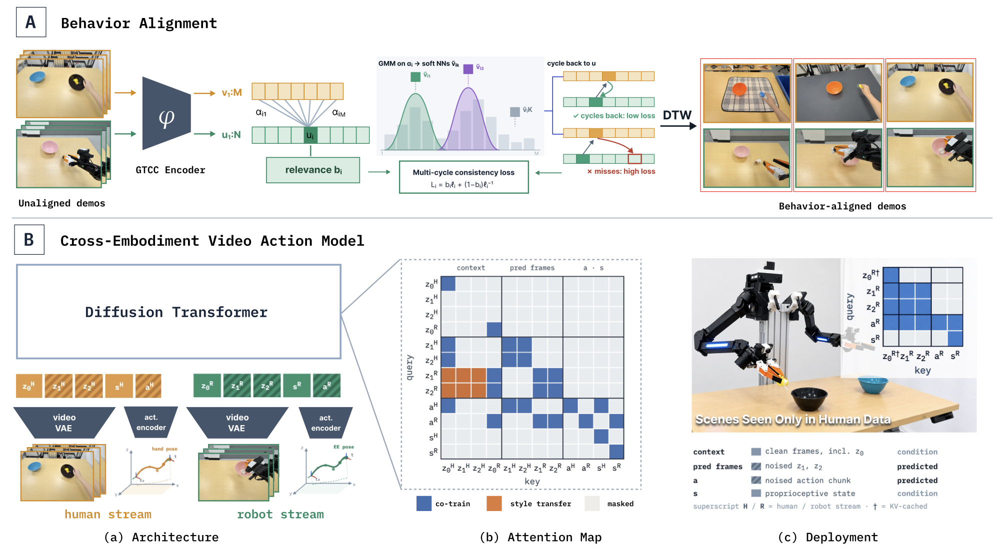

BATCH: Behavior Alignment for Cross-Embodiment Learning from Humans
Abstract
Human demonstrations provide a scalable source of diverse manipulation data, but leveraging them for robot learning remains challenging due to differences in embodiment, viewpoint, action spaces, and temporal structure. We introduce BATCH, a cross-embodiment learning framework that explicitly aligns human and robot behaviors. BATCH learns self-supervised temporal representations with a cycle-consistency objective to establish cross-embodiment correspondences without manual annotation. We further introduce two complementary training objectives that leverage these correspondences within an autoregressive video-action diffusion model: behavior-aligned co-training and human-to-robot style transfer. On real-world manipulation tasks, BATCH improves generalization to unseen task configurations compared with training on unaligned data and prior cross-embodiment baselines, with additional gains from the style-transfer objective. Our results demonstrate that explicit behavior alignment enables more effective transfer from human demonstrations to robot policies.
Method

Figure 2: BATCH method. (A) Behavior Alignment: GTCC encoder trained with multi-cycle consistency learns shared temporal embeddings from unaligned demonstrations; the trained encoder then combines with DTW to retrieve behavior-aligned human and robot segments. (B) Cross-Embodiment Video Action Model: (a) aligned human and robot trajectories are encoded as separate streams and input to a diffusion transformer; (b) the attention pattern supports both joint co-training and human-to-robot style transfer objective within the same model; and (c) at deployment, the robot stream is used to execute policy in scenarios only seen in human data.